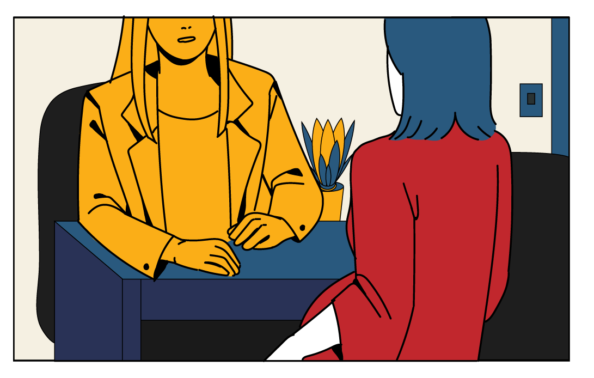
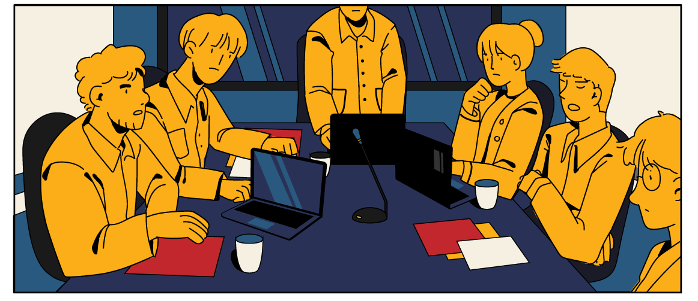
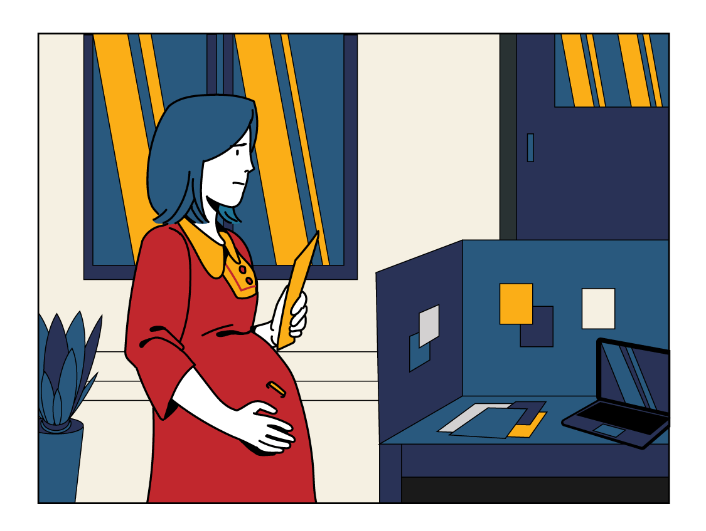
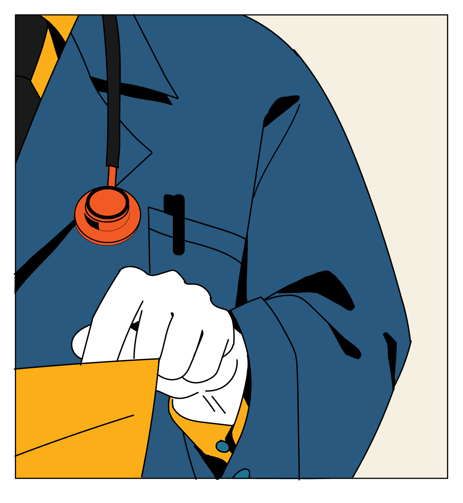

ฉันเป็นหัวหน้าแผนกของบริษัทเสมอภาค
หลังจากแต่งงานได้ปีกว่า
ฉันก็ท้อง
ถึงแม้จะลาคลอดได้ก็ตาม
แต่งานก็ยังคงรั้งฉันไว้อยู่
แค่เรื่องงานก็เครียดมากพอแล้ว
ยังจะต้องมาเจอเพื่อนร่วมงานที่ไม่เคยจะเข้าใจอะไรอีก
เออนี่ แล้วสรุปเธอจะลาหรือเปล่า?

ฉันเข้าใจเธอนะ แต่มันก็เดือดร้อนต่อเพื่อนร่วมทีมของเธอจริง ๆ ที่จะต้องมารับภาระงานแทนเธอ ตั้ง 3 เดือน
เป็นคนท้องนี่มันดีจังเลยนะ ลาหาย
แล้วโยนงานให้คนอื่นได้ด้วย
ฉันเข้ามาในห้องประชุมที่มีลูกน้องนั่งคุยรอเวลา
เห็นว่าพี่เขาจะลาคลอดนะ
ภาระงานพวกเรา
ก็จะหนักขึ้นสิงี้

เป็นเฮดงานซะเปล่า
เสียงานเสียการกันพอดี
ซึ่งก็ไม่พ้นคำนินทาเกี่ยวกับเรื่องของฉันเอง
บางทีการปรึกษาหัวหน้า อาจจะทำให้หาทางออกได้

แต่กลับกลายเป็นว่าฉันไม่ได้คำปรึกษาที่ดีกลับมาเลย
คุณจะบอกให้ผมหาคนมาแทน ?
โดยที่บริษัทเรายังต้องจ่ายเงินให้
คุณทุกเดือน ทั้ง ๆ ที่คุณจะไม่
มาทำงานตั้ง 3 เดือนเหรอ ?
ยังไงซะการลาไม่ลาก็ต้องเป็นฉันเองที่
ต้องตัดสินใจ
เป็นคนท้องนี่
ดีจริงๆเลยน้า
ก็แค่ท้อง
ไม่ได้พิการมั้ย
อย่ามาสำออย
หน่อยเลย

เอาเปรียบคนอื่นเกินไปมั้ยเนี่ย
แล้วใครจะทำงาน?
อยู่ในมือหมอฉันคิดว่าจะสบายใจขึ้นไปบ้าง
คุณแม่มีภาวะ
ครรภ์เป็นพิษ
นะครับ

ควรที่จะลดความเครียด
หรือพักผ่อนให้เพียงพอ
หรือถ้าทางที่ดีควรจะอยู่ในความดูแลของแพทย์ก่อนจะคลอดครับ
ทางออกเดียวของฉันตอนนี้ก็คงต้องเป็นการ
“ลาออก”
ถึงจะรู้สึกผิดแต่สิ่งสำคัญสำหรับฉันตอนนี้
คือ
ลูก
และ ชีวิต
ของฉันเอง
การลาคลอดเป็นเรื่องที่สำคัญของผู้หญิงมีครรภ์
ถ้าวันหยุดไม่เพียงพอก็อาจจะกระทบต่อลูก
และต่อสภาพจิตใจของคุณแม่ได้
อยากให้ผู้ร่วมงานเข้าใจในบทบาทของการเป็นแม่
ถึงแม้การทำงานจะสำคัญแต่สุขภาพก็ต้องมาก่อน
สิทธิลาคลอดเดิม

ไม่พอต่อการรักษาใจ
การที่ลาได้แค่ 98 วันก็จะมีประเด็นว่าเมื่อคุณแม่ต้องกลับไปทำงานบางรายต้องแยกกับลูกหรือส่งลูกให้ปู่ย่าตายายเลี้ยง
ส่วนหนึ่งมีผลต่อการให้นมแม่ที่ขาดช่วงต่อให้ปัจจุบันจะมีเครื่องปั๊มนมแต่ก็อาจจะเกิดข้อจำกัดของการปั๊มนมในที่ทำงาน
เพราะบริษัทหลายๆที่ก็อาจจะไม่ได้มีห้องหรือสถานที่สำหรับปั๊มนมและไม่สะดวกที่จะให้คุณแม่ลาไปปั๊มนมได้ทุกๆ 2 ชั่วโมง
สิ่งเหล่านี้ล้วนสร้างความเครียดกับคุณแม่
หากคุณแม่ไม่ได้ปั๊มนมตามเวลาการผลิตน้ำนม
ความสามารถในการผลิตน้ำนมก็จะลดลง สุดท้ายก็
จะจบลงที่ว่าไม่สามารถให้นมแม่ต่อได้
จนครบ 6 เดือน